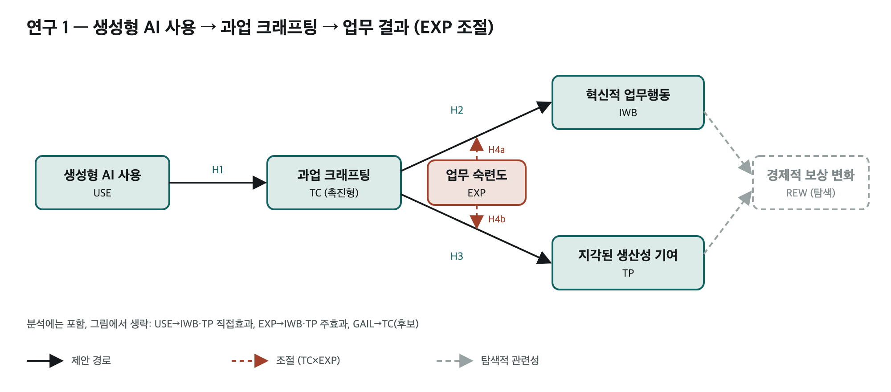
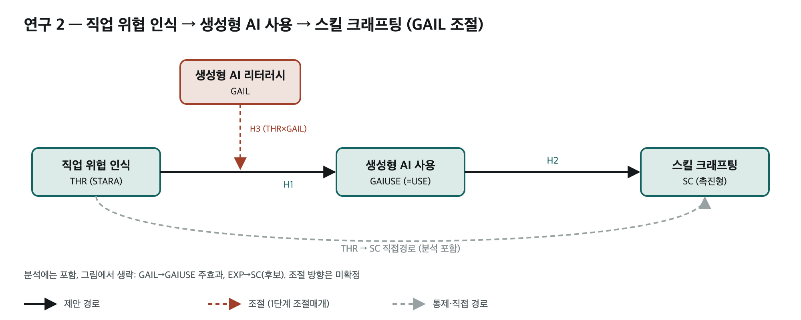

한 번의 설문, 두 개의 연구. 연구 1은 일을 바꾸는 행동과 업무상 결과·보상, 연구 2는 직업 위협과 역량 개발 행동. PLS-SEM · 일회 횡단 설문 · 유급 디자인 업무 종사자(직원·프리랜서).
현행 설문 v0.8 초안 (2026-10-04). 본조사 배포본 아님 — 동의문 필수정보·경력 기준·IRB 확정 전.

연구 1 · 일의 수행
USE → TC → IWB·TP → 보상(REW_AI)
GAIL: USE→TC 조절 · EXP: TC→IWB·TP 조절

연구 2 · 역량 개발 행동
THR → USE → SC + THR → SC 직접경로
GAIL: THR→USE 조절 · EXP: USE→SC 조절
그림은 10-03 07안 기준 이미지. 연구2 EXP 조절·THR→SC 직접경로는 11 통합모형 v0.4에서 추가됨 — 최신 그림은 통합모형 HTML 참조.
| RQ | 질문 |
|---|---|
| 1-1 | 업무상 생성형 AI 사용 수준은 촉진적 과업 크래프팅과 어떤 관련이 있으며, GAIL에 따라 달라지는가? |
| 1-2 | AI 사용과 IWB·TP의 관련성에서 TC를 통한 간접효과가 나타나며, 그 크기는 GAIL·EXP 수준에 따라 달라지는가? |
| 1-3 | TC와 두 업무상 결과의 관련성은 업무 숙련도에 따라 달라지는가? |
| 1-4 | IWB·TP는 경제적 보상 변화와 어떤 관련이 있는가? (증가·무영향·감소 모두 열어 둠) |
| 2-1 | 직업대체 위협·걱정은 업무상 AI 사용 수준과 어떤 관련이 있는가? |
| 2-2 | 위협·걱정은 AI 사용을 통한 간접효과와 별개로 SC와 직접 관련되는가? |
| 2-3 | 위협·걱정과 AI 사용의 관련성은 GAIL에 따라 달라지는가? |
| 2-4 | AI 사용과 SC의 관련성은 EXP에 따라 달라지는가? |
| 변수 | 측정 내용 | 연구1 | 연구2 | 문항 | 출처 | 설문 위치 |
|---|---|---|---|---|---|---|
| USE | 업무상 AI 사용 (아이디어·질문·지식·문제해결) | 독립 | 매개 | 4 | Zhang, Yu & Ma | 02 업무상 AI 사용 |
| TC | 촉진적 과업 크래프팅 | 매개 | — | 4 | Bindl et al., 2019 | 03 과업 크래프팅 |
| SC | 스킬 크래프팅 (개발 행동) | — | 결과 | 4 | Bindl et al., 2019 | 04 스킬 크래프팅 |
| IWB | 혁신적 업무행동 | 결과 | — | 9 | Janssen, 2000 | 05 혁신적 업무행동 |
| TP | AI의 지각된 생산성 기여 | 결과 | — | 3 | Torkzadeh & Doll, 1999 | 06 지각된 생산성 기여 |
| EXP | 자기평가 직업 전문성 | TC→IWB·TP 조절 | USE→SC 조절 | 5 | Van der Heijden et al., 2018 | 07 직업 전문성 |
| GAIL | 생성형 AI 리터러시 (5차원) | USE→TC 조절 | THR→USE 조절 | 17 | Liu et al., 2025 | 08 생성형 AI 리터러시 |
| THR | AI 직업대체 위협·걱정 | — | 독립 | 4 | Brougham & Haar, 2018 번안 | 09 AI 대체 위협·걱정 |
| TV·SV | 과업·기술 다양성 (비교 후보) | M1·M2 중간경로 비교용 | 4+4 | Morgeson & Humphrey, 2006 | TV · SV | |
| ACT | 기획·탐색·제작·수정별 사용 빈도 (4단계) | 보조 프로필 · USE와 합산 금지 | 4 | 연구자 재구성 (Luo 2025 응답형식) | 10 활동별 사용 | |
| REW_AI | AI가 현재 소득에 미친 영향 (증가/무영향/감소) | 보상 결과 | — | 1 | Humlum & Vestergaard, NBER WP33777 Q14a | 11 소득 영향 |
핵심 50문항 + TV·SV 8 + ACT 4 + REW_AI 1 + 동의·선별·배경·마무리. 응답: 국문 https://forms.gle/Q4ipz4b7sfZNQ3389 · 영문 https://forms.gle/hX9dTrbGmHEbNF7t5
| 이전 (09-20) | 현재 (10-03) | 이유 |
|---|---|---|
| 논문 3편 | 설문 1회 · 연구 2개 | 지도교수 3회차 면담 "변수가 많다 · 설문 먼저". 3편(PSY)은 팀 수준 변수라 프리랜서와 충돌 |
| TV·SV 최종 결과 | IWB·TP 결과, TV·SV는 비교 후보 | WDQ는 변화량이 아닌 현재 수준. TC→TV 직접근거 부족. 실무적 함의 약함 |
| AAX(불안) | THR(위협·걱정) | 위협 인식과 불안 정서 혼재. 원문 STARA 4문항 중 3문항에 worried 포함 → 명칭에 반영 |
| LOAD → PERF → REW | 제외 / REW_AI 범주형 | AI는 부하를 높이기도 낮추기도 함. ERI 보상척도는 조직근로자용 · 실제 소득과 다른 개념 |
| EXP: 부담 완화 조절 | TC→IWB·TP, USE→SC 조절 | "누가 TC를 많이 하나"가 아니라 "TC의 성과 관련성이 숙련도에 따라 다른가" |
| CC · PSY | 제외 | AI 특수성 약함 · 방향 불확정 · 팀 수준 문제 |
전체 정리: 연구모형 변화 이유 정리 v0.1 →
| 날짜 | 단계 | 문서 |
|---|---|---|
| 09-20 | 3편 경로모형 초안 | AI크래프팅 경로모형 · 질문지·정합성 검토 |
| 10-03 오전 | 이론근거·인지부하 근거 수집 → 간결화 · 두 축 검토 | 01 · 02 · 03 · 04 · 05 |
| 10-03 낮 | 원문기반 연구 1·2 구도 → EXP 조절 수정모형 → 변수별 설문 | 06 · 07 · 08 v0.2 |
| 10-03 저녁 | 통합모형 v0.4 · 양적검토 · 통합설문지 v0.1→v0.4 | 11 · 12 검토 · 12 설문 v0.4 · 14 Dillman · 17 인용 |
| 10-04 오전 | 인계 · 예비조사 결정안 · TV·SV 추가 v0.5 | 18 인계 · 19 결정안 · 자료집 v0.5 |
| 10-04 밤 | Google Forms 국문·영문 v0.8 | v0.8 변경사항 |
파일명 끝 버전이 가장 높은 것만. 같은 시리즈의 이전 버전은 아래 아카이브.
| 수정 | 파일 | 버전 | 형식 | 폴더 |
|---|---|---|---|---|
| 10-04 21:26 | 02_영문_설문지 | — | 문서 | 질문 검토/최종 설문 |
| 10-04 21:26 | 01_국문_설문지 | — | 문서 | 질문 검토/최종 설문 |
| 10-04 09:39 | 확인된_질문지_영한대조_TV·SV추가_v0.5 | v0.5 | 엑셀 | 질문 검토 |
| 10-04 09:35 | 00_설문원문_영한대조_검토자료집 | — | HTML | 질문 검토 |
| 10-03 21:55 | 12_연구1·2_통합설문지_예비조사검토본_v0.2 | v0.2 | 문서 | · |
| 10-03 20:20 | 12_연구1·2_통합설문지_예비조사검토본_v0.1 | v0.1 | 문서 | · |
| 10-03 17:03 | 08_변수별설문_원문대조_인용_명세서_v0.1 | v0.1 | 문서 | · |
| 10-03 17:03 | 08_**_연구1·2_변수별_설문문항_검토초안_v0.1 | v0.1 | 문서 | · |
선행연구 PDF 원문과 .docx·.pages·.numbers 파일은 공개하지 않는다. 문서 안의 PDF 링크는 점선 텍스트로 표시. 원문 확인은 설문의 최종 타당화나 배포 승인을 뜻하지 않는다. 빌드: scripts/build-phd-model-portfolio.py · 2026-10-06 07:39